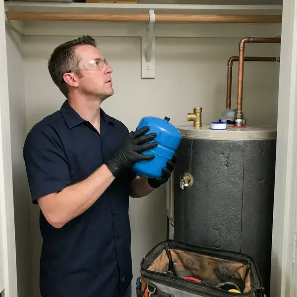

Water Heater Expansion Tank Installation in Downey, CA
Extend the life of your water heater and prevent costly repairs with a proper expansion tank setup from FKM Plumbing in Downey, CA.
- Same-Day Installation Available
- Code-Compliant Mounting
- Fast, Reliable Service
- Code Compliant

Stop Pressure Spikes From Wearing Out Your Water Heater in Downey, CA.
Do not let thermal expansion damage your plumbing system, call FKM Plumbing today for a consultation.
Professional Water Heater Expansion Tank Installation in Downey, CA
FKM Plumbing sees a lot of homes with high incoming pressure and pressure regulators that create closed systems. When water heats from about 60 to 120 degrees, it expands and has nowhere to go without an expansion tank. We install the tank securely on the cold supply and confirm the system holds steady through a complete heating cycle.
Our expertise includes:
- Code-compliant expansion tank sizing and installation
- Air precharge set to match your measured static pressure
- Secure strapping and bracket support on the cold water line

Additional Plumbing Installation Services in Downey, CA
We install water heaters, pumps, lines, and fixtures across Downey, CA with precision workmanship that meets every local code.


Customers
Why Choose FKM Plumbing for Water Heater Expansion Tank Installation in Downey, CA?
An expansion tank is a small part that does a big job, but only if it is sized and charged correctly. We take the time to measure your pressure instead of installing whatever tank is in stock.
- Full System Check, We inspect the PRV and relief valve while we are on site.
- Measured Pressure, We test static water pressure and set the tank precharge to match.
- System Protection, An expansion tank absorbs excess water pressure, preventing strain on your water heater and pipes.
Citywide Coverage
No matter where you are located in Downey, our trained technicians are available to provide timely, efficient water heater expansion tank installation, bringing your system up to code.
Experienced Team
Our team includes highly trained, licensed plumbers with extensive experience in water heater expansion tank installation. They stay updated on the latest Southern California plumbing codes and best practices.
Safety-First Approach
Our meticulous approach means your expansion tank is installed correctly, preventing hazards and protecting your home's plumbing system from excessive pressure.
Trusted Certified Downey Plumbing Services Professionals
At FKM Plumbing, we take pride in providing certified plumbing services throughout Downey, CA. Backed by leading industry credentials, our experienced plumbers combine technical skill with genuine customer care. Whether it is repair, installation, or maintenance, we follow strict safety and quality standards to deliver long-lasting results you can trust.
Call Us Now PHCC Plumbing Contractor Recognition
PHCC Plumbing Contractor Recognition Better Business Bureau (BBB) Accreditation
Better Business Bureau (BBB) Accreditation Angi Certified Pro
Angi Certified Pro ISO 9001 Quality Management Certification
ISO 9001 Quality Management CertificationReliable Water Heater Expansion Tank Installation Services in Downey, CA
Brands and Quality Products in Downey, CA
FKM Plumbing uses only high-quality, durable expansion tanks from trusted manufacturers known for reliability. We work with proven brands like Watts, Amtrol and Z-Flex, so you receive a product built to last in your Downey, CA home. Our commitment to quality extends from the materials we use to the precision of our installation, giving you a long-lasting solution that reliably protects your plumbing system.

Expansion Tanks With Tankless Water Heaters in Downey, CA
Tankless water heaters hold very little water, so thermal expansion is minimal in most homes. However, homes with recirculation loops, storage buffer tanks or certain closed system setups may still benefit from an expansion tank. We evaluate your system and only recommend a tank when it serves a real purpose. This keeps you from paying for parts you do not need.
Tank Sizing and Placement in Downey
Correct sizing and placement are key to an effective water heater expansion tank in Downey. An undersized tank will not provide adequate protection, while an oversized one is an unnecessary expense. We accurately calculate the required tank volume based on your water heater's capacity, system pressure and average water temperature. Placement matters too, typically near the water heater on the cold water inlet line, with easy access for future maintenance or inspection.
Expansion Tank Sizing for Large Water Heaters in Downey
A standard 2 gallon tank works for many 40 and 50 gallon heaters at moderate pressure. Larger heaters, higher incoming pressure or high-capacity systems may need a 4.5 gallon tank or larger. We use manufacturer sizing charts that factor in heater volume, supply pressure and temperature setting. Correct sizing keeps the tank from over-flexing and failing early.
New Expansion Tank Installation in Downey
If your home has a pressure reducing valve and no expansion tank, the water heater is probably seeing a pressure spike every heating cycle. We install a new tank on the cold water supply near the heater using a tee and short nipple. The air side is precharged to match your static pressure, usually between 50 and 70 psi. We then run the heater and watch the gauge to confirm pressure stays steady.
Pressure Reducing Valve and Expansion Tank Pairing in Downey
Many homes see high incoming pressure, so pressure reducing valves are common. The PRV protects your fixtures but also turns your plumbing into a closed system, which makes an expansion tank necessary. We test the PRV output and replace it if it is creeping or failing. Pairing a healthy PRV with a correctly charged expansion tank gives you steady pressure throughout the house.
Tankless Water Heater Expansion Tank Integration in Downey, CA
While tankless water heaters typically have different pressure dynamics, an expansion tank can still be beneficial or even required in certain setups or by local codes in Downey, CA. We assess your tankless unit and plumbing configuration to determine whether an expansion tank is necessary, especially with higher flow rates or a recirculation pump. Our technicians are experienced with integrating expansion tanks cleanly with many tankless models, keeping them running efficiently and protecting your plumbing system.

Expansion Tank for Tankless Water Heaters in Downey, CA
While tankless water heaters do not store hot water, an expansion tank can still be beneficial, and sometimes required, in Downey, CA plumbing systems. If your tankless unit is part of a closed system, an expansion tank can help absorb pressure spikes from the cold water supply or cut down wear on components. Our plumbers assess your tankless setup and local codes to determine whether an expansion tank is necessary and recommend the right solution for your system's longevity and performance.
Water Heater Expansion Tank Installation Near Me in Downey, CA
When you search for 'water heater expansion tank installation near me' in Downey, CA, FKM Plumbing is your dependable local choice. Our team is ready to respond quickly to your plumbing needs across the entire Downey area.
When you search for 'water heater expansion tank installation near me' in Downey, CA, FKM Plumbing is your reliable local choice. Our team is positioned to provide fast response times and efficient service to homes and businesses throughout the area. We are proud to be the trusted plumbing experts close to you.
FKM Plumbing at a Glance
- Licensed and insured plumbers serving Downey, CA
- 24/7 emergency service with same-day scheduling
- Clear written estimates, no hidden fees
- 4.8-star rated by 754+ Southern California customers
Downey Map
Downey Information
- Population
- 108,816
- Area codes
- 562/626/310
- Service area
- Downey and communities within 40 miles
- Nearby
- Norwalk, Bellflower, South Gate, Lynwood
For homes in Downey, CA, where municipal water systems often include backflow prevention, a water heater expansion tank is essential for managing thermal expansion and protecting your plumbing from unnecessary stress.
Expert Services
Trust our professionals for reliable FKM Plumbing solutions in Downey, CA.
Our Specialized Plumbing Services in Downey, CA
At FKM Plumbing, we provide a complete range of plumbing services across Downey, CA. From leak detection to full system installations, our team ensures fast, precise, and affordable service for both residential and commercial properties. Explore our core services below:


How Our Water Heater Expansion Tank Installation Process Works in Downey, CA
Installing an expansion tank is quick, but we follow a careful process to confirm it is sized and charged correctly.
Request a Quote
Call (213) 871-0701 and tell us about your water heater and any symptoms like a dripping relief valve. We will schedule a visit and give you an honest price.
Test and Size
We measure your static pressure, check the PRV and relief valve, and choose the right tank size. The tank's air charge is adjusted to equal your pressure.
Install and Verify
We install and support the tank on the cold supply, then run the heater through a cycle. Pressure is monitored to confirm the system stays steady.
Frequently Asked Questions About Water Heater Expansion Tank Installation in Downey
The cost for water heater expansion tank installation in Downey typically ranges from $250 to $500, including parts and labor. This can vary based on the tank size, the complexity of the installation and any necessary plumbing changes. We provide transparent, upfront pricing after an on-site assessment.
A standalone expansion tank generally does not require a permit, but one is often included when it is installed with a new water heater. We follow local requirements on every job.
When water heats up, it expands. Without an expansion tank, this expanded water has nowhere to go, increasing pressure within your closed plumbing system. This constant pressure can quickly wear out water heater components and relief valves and even cause leaks or ruptures. The expansion tank absorbs this excess volume, protecting your entire system.
Most standard water heater expansion tank installations can be completed within 1 to 2 hours. More complex installations, or those requiring significant pipe changes, might take a bit longer. Our plumbers work efficiently to minimize disruption to your home.
Signs of a failing expansion tank include water dripping from the tank's air valve, rust or corrosion on the tank's exterior or a water heater that frequently cycles on and off. You might also notice fluctuating water pressure or a banging sound in your pipes, which indicates excessive pressure buildup.
FKM Plumbing stands behind our workmanship and the quality of the products we install. We offer a warranty on both the expansion tank itself, per the manufacturer's terms, and our installation labor. Specific warranty details will be provided at the time of service.
A typical water heater expansion tank can last anywhere from 5 to 10 years. Municipal water across much of Southern California is hard, leaving chalky scale on faucets, showerheads, and inside water heater tanks. Water quality, system pressure and installation quality all influence its lifespan, and regular inspections can help identify when a replacement is needed.
Manufacturers usually offer one to five year warranties depending on the model. We also warranty our installation labor.
What People Are Saying About Our Plumbing Experts?

Emily R.
I called FKM Plumbing for plumbing repair, and the technician was fast, polite, and thorough. They explained the problem clearly and fixed it the same day. I will definitely hire them again. Highly recommended!
Plumbing Repair · Lynwood, CA
Patricia H.
We had a slab leak that two other companies could not find. FKM Plumbing located it in under an hour, explained our options, and the price matched the quote to the dollar.
Slab Leak Repair · Compton, CA
Robert G.
The trenchless sewer replacement saved our front yard. They walked us through the camera inspection footage first so we knew exactly what we were paying for.
Sewer Line Replacement · Lynwood, CA
Sofia M.
Two new toilets installed in one visit, no mess left behind, and the tech even adjusted a faucet he noticed was dripping. Fair pricing and really friendly.
Toilet Installation · Downey, CALaura S.
I scheduled a water heater replacement, and the team made the process smooth and affordable. The new unit works perfectly, and they cleaned up after completing the job.
Water Heater Replacement · Lakewood, CA
Daniel K.
A pipe burst at 11 pm and they actually answered. The plumber showed up within the hour, shut everything down, and had us back to normal the next morning. Could not ask for more.
Emergency Plumbing · Downey, CA